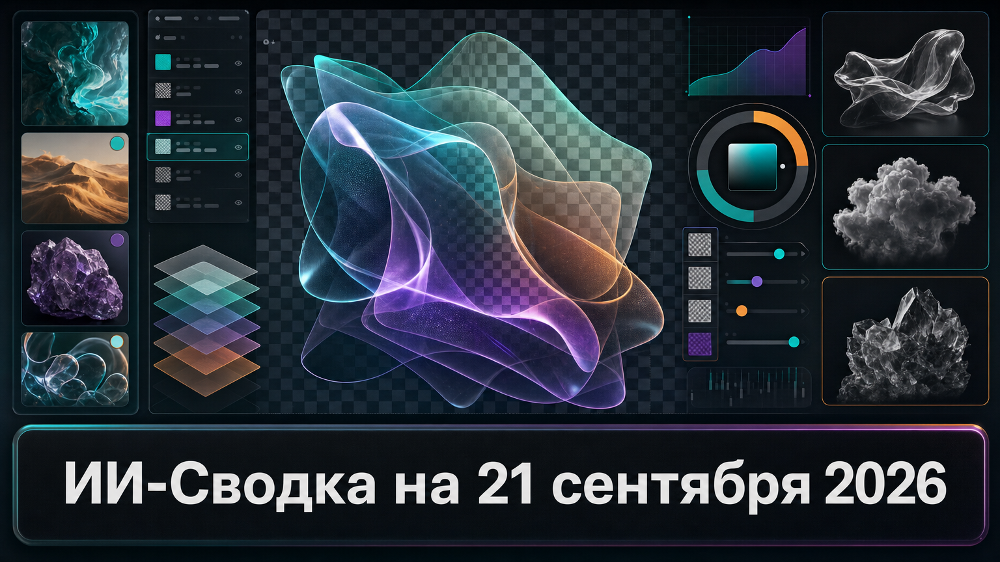

Новостей сегодня меньше, чем обычно
В центре короткой повестки — новый релиз Alibaba Qwen для генерации и редактирования изображений. Qwen-Image-2.1 добавляет нативную работу с прозрачностью, что приближает генеративную графику к прикладным задачам дизайна, интерфейсов и создания контента.
Важно учитывать, что ключевые характеристики модели заявлены разработчиком, а независимые сравнения качества в доступном пуле источников не приводятся.
Alibaba Qwen объявила о выпуске Qwen-Image-2.1 — модели для генерации и редактирования изображений с открытыми весами. Согласно официальному анонсу Alibaba Qwen, модель поддерживает создание изображений с прозрачным фоном в формате RGBA, а также работу с несколькими референсными изображениями.
Поддерживающая сводка HuggingNews указывает на архитектуру с компонентом 7,1B DiT и Qwen3-VL-8B, а также на возможность использовать до десяти референсов. Нативная прозрачность особенно полезна для подготовки графических элементов, карточек товаров, интерфейсных ассетов и многослойного монтажа: пользователю не нужно отдельно удалять фон после генерации. Веса доступны по некоммерческой лицензии, поэтому релиз корректнее называть open-weight, а не полностью open-source.